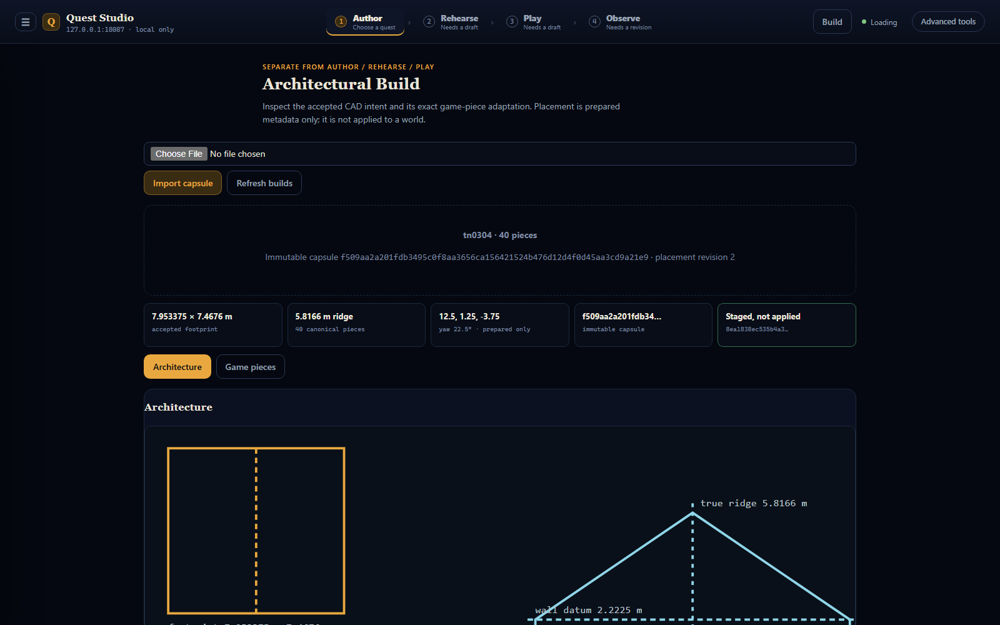
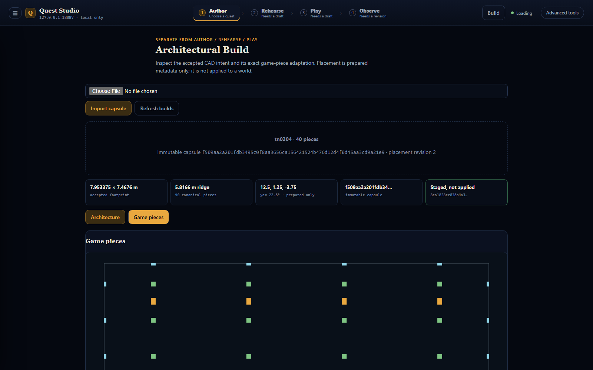
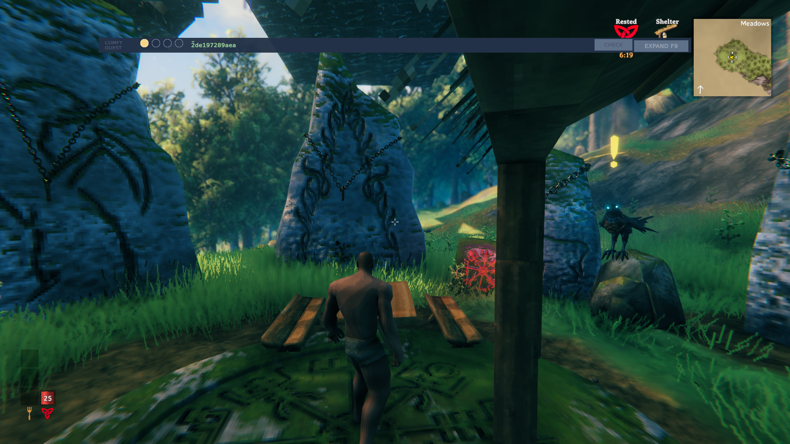

Drive the first composition from an accepted architectural capsule into a Guild venue, creator campaign, live Runtime experience, and community evidence loop.
Private until export. Notes stay in this browser; checkmarks are observations, never proof.
The integration target
Turn a proved structure into a community creative primitive.
A steward publishes the accepted build lineage, lifecycle, evidence policy, and bounded creator freedoms as one typed palette primitive.
Evidence arrives with this connection.
implemented
Compose Signature Hunt at the venue
The two-artifact campaign substrate exists. The open seam is making the venue an owned part of that creative composition instead of an adjacent artifact.
One bounded operation must place or reuse the exact venue, bind the campaign entry anchor, activate the exact revision, and retain cleanup authority.
Evidence arrives with this connection.
open
Return player evidence to the community system
Installed completion evidence must trace from player run through campaign and creator artifact back to the steward-published venue primitive and capsule.
Evidence arrives with this connection.
Pinned visual references
Post feedback against the exact views.

The accepted architectural reading
Studio presents source-backed dimensions, reconciliations, provenance, and game-only adaptations without changing the source observation.

The canonical game adaptation
Forty exact pieces are the accepted substrate. The next decision is what this object means and who may configure which aspects of it.

The structure standing in Valheim
This is accepted operational evidence, not yet a community place. The composition slice gives it steward meaning, creator use, Runtime behavior, and evidence lineage.
Eight human actions
Spend the seat on meaning, authority, composition, and judgment.
01
Read the proof boundary and connection map. Record only if the proposed composition is solving the wrong creator-level problem.
Precondition: The tracked workbook manifest and accepted evidence links load.
02
Is The Slayers' Field Lodge the right community meaning? Describe the role this place plays for stewards, creators, and players.
Precondition: The accepted structure is treated as a substrate, not an unresolved building test.
03
Record what the steward must lock: source lineage, structural identity, lifecycle, evidence policy, allowed campaigns, or other invariants.
Precondition: The venue has a stated community meaning.
04
Record what creators may configure: name, story copy, placement intent, anchor choice, attached experiences, or a deliberately smaller set.
Precondition: The steward-owned invariants are explicit.
05
Describe how Air Drop starts here, how Cold Shot succeeds it, what object or area anchors entry, and what completion means to the community.
Precondition: Creator freedoms are bounded enough to compile deterministically.
06
Look for the first place ownership, versioning, placement, binding, cleanup, or evidence lineage becomes ambiguous. Mark every ‘can't answer why’ moment.
Precondition: The venue and campaign have one concrete proposed relationship.
07
Would a bounded venue → campaign → play → evidence demonstration prove the creative abstraction is real? Record what would make the demo convincing or theatrical.
Precondition: The open seams are visible and machine facts remain separate from human judgment.
08
Select the verdict and next attack, preserve exact observations, then export the review packet for triage.
Precondition: The semantic, authority, composition, and demo judgments have all been considered.
Decision packet
Preserve the observation. Choose the attack.
Copy-only operator surfaces
Open and close the already-proven demo deliberately.
Open the accepted demo
Runs the already-proven warm status/check/count/diff/status path, then opens Studio and the exact Valheim capture.
tools\quest-studio\Invoke-ArchitecturalDemo.ps1 -Action Open
Read demo status
Reads the bounded control-plane and warm-session status without changing the world.
tools\quest-studio\Invoke-ArchitecturalDemo.ps1 -Action Status
Stop Studio only
Stops only the Studio host and SSH tunnel. The warm Valheim structure remains standing.